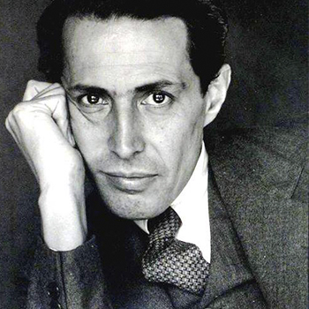
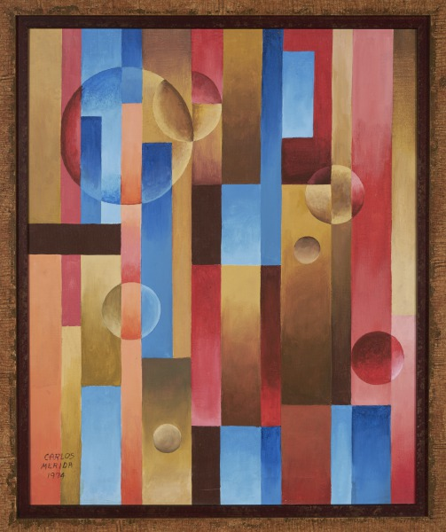
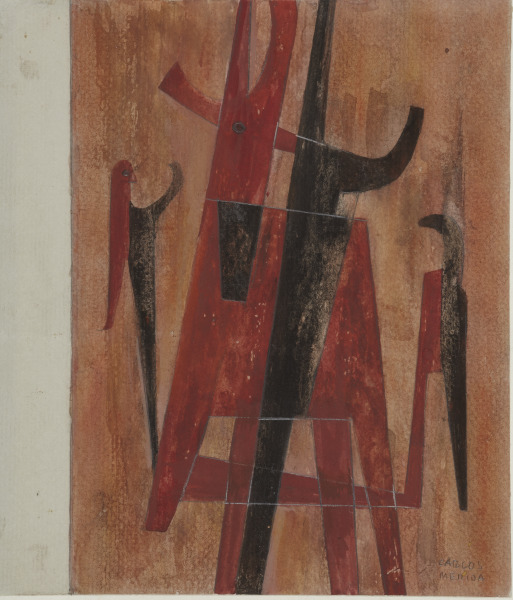
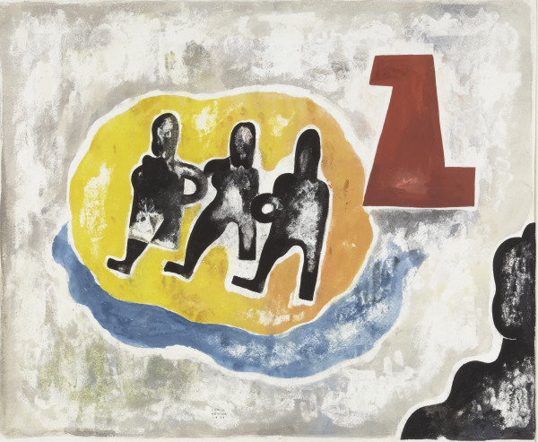

Carlos Mérida
El artista guatemalteco Carlos Mérida es mejor conocido por haber creado arte abstracto
modernista que integró la cultura latinoamericana con la pintura europea.
Nacido en 1891 en la Ciudad de Guatemala,
Mérida era de herencia mixta español y maya k’iche’, lo que más tarde sería vuna influencia significante en su obra.
Estudió música de niño, pero después de haber perdido sus
facultades auditivas comenzó a estudiar pintura. En 1910, a los 19 años, Mérida presento obra en su primera exhibición de arte.
En ese mismo año, se mudó a Paris donde vivió
durante cuatro años y conoció y trabajó con los artistas Pablo Picasso,
Piet Mondrian, y Amedeo Modigliani, y otros artistas latinoamericanos
que vivían en Europa en esa época. En 1919, Mérida regresó a Latinoamérica y
vivió en México cuando concluía la Revolución Mexicana.
Allí, él trabajó con Diego Rivera y Rufino Tamayo. En las décadas posteriores,
Mérida expandió su práctica al crear trabajos gráficos,
bosquejos, tapices, y escenografías y disfraces para espectáculos de baile.
Murió en 1984 en México, D. F. a la edad de 93 años. La amplia gama del trabajo artístico de Carlos Mérida
logró fusionar los aspectos del surrealismo, el muralismo,
el cubismo, y el modernismo europeo junto con
elementos de la cultura maya precolombina.
Fue conocido por integrar elementos figurativos en su arte abstracto,
como coloridas representaciones orgánicas
o geométricas de personas en grupos, y utilizó una gran variedad
de medios como pintura al óleo, acuarelas, gouache y lápiz, y pergamino y plástico.
Él recibió varios galardones prestigiosos por su trabajo,
en particular la Orden del Quetzal
(la distinción máxima de Guatemala) y la Orden del Águila Azteca
(la más alta de México que se otorga a los extranjeros).
La colección de Phoenix Art Museum tiene siete de las obras de Mérida
que fueron creadas entre las décadas de los años 1930 y 1960,
incluyendo las pinturas Juego de líneas (1964) y Composición abstracta (1974).Me gustaría que vieras algunas de las pinturas de Carlos Mérida ¡Son increíbles! ¿Te gustaría conoerlas?
Composición abstracta
1,994Motivo arcáico
1,976Invenciones sobre un tema de amor
1,939